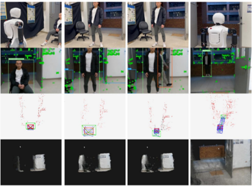
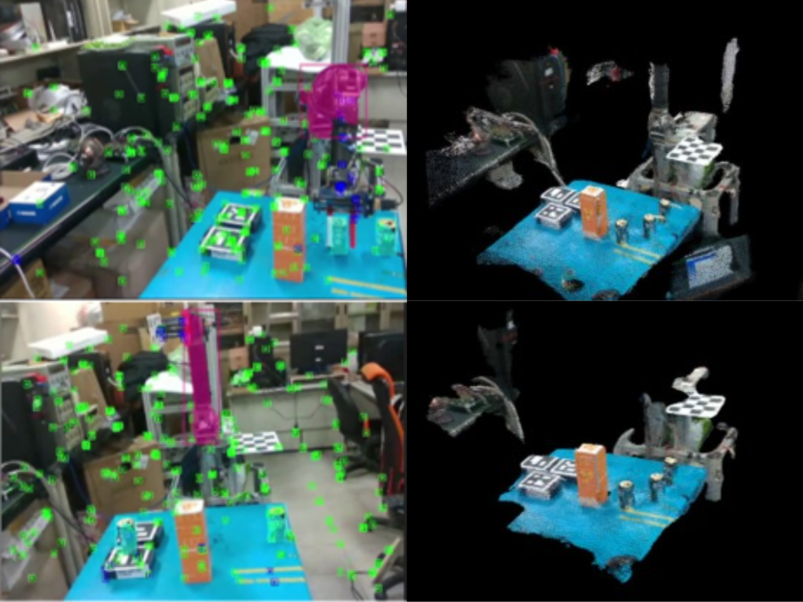
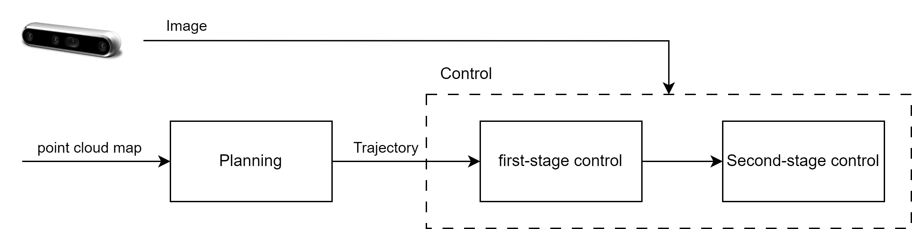
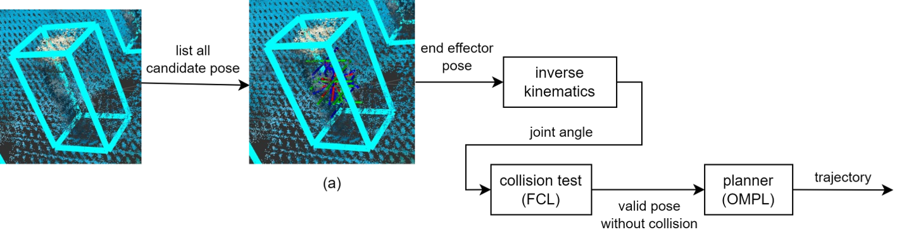
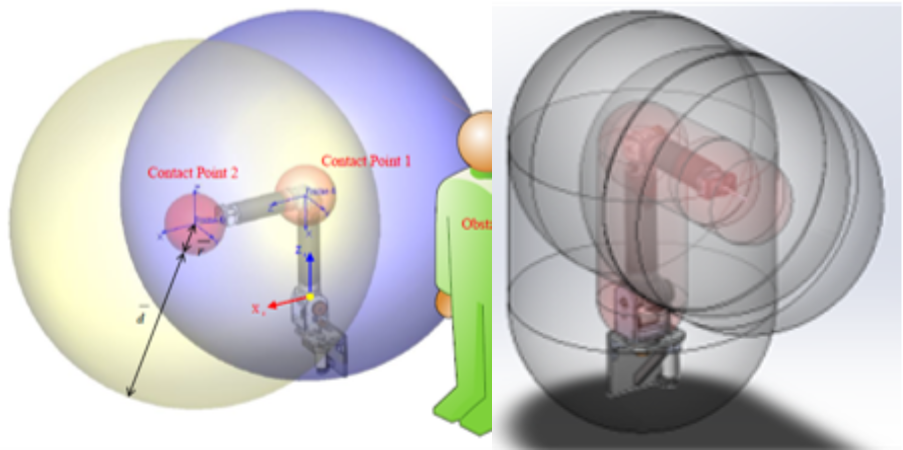
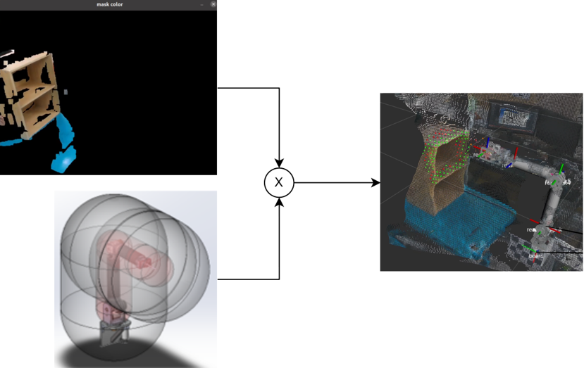
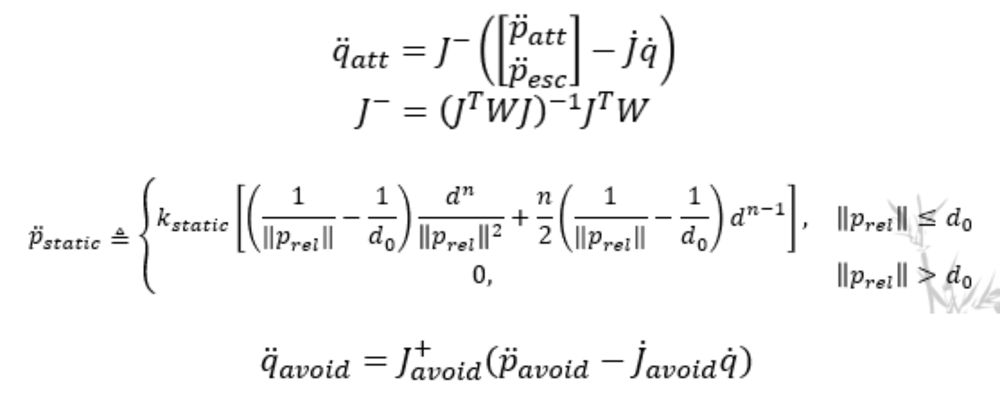
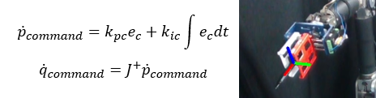
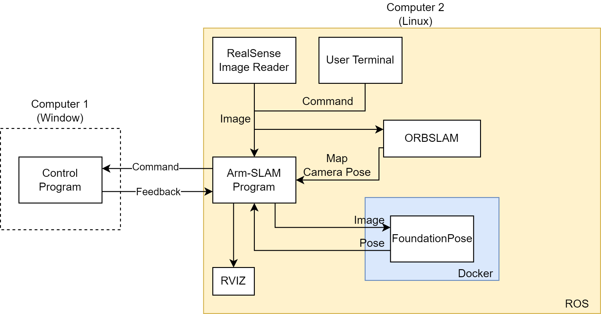

Methodology
本文將ARMSLAM分成兩個部分，Mapping與Localization,
- Mapping: 利用ORBSLAM3結合YOLOv8對環境建圖，並及時提供相機的位置
- Localization: 利用Mappin所建立的地圖控制機器手臂移動到指定位置
Mapping
本研究基於本實驗室過去所開發的系統利用ORBSLAM3與YOLOv8整合的系統，透過將影像中指定物件移除(如：人、機器手臂)， 確保SLAM在匹配時不會發生問題，以及利用Point cloud所建立的地圖不會出現非預期的物件。
ORBSLAM3+YOLOv8
利用YOLOv8濾除影像中的動態物件以解決ORBSLAM3在動態環境中的匹配問題
並且為解決YOLOv8自定義在資料量不足的情況下無法有效預測物件，本文採用後處理的方式統計並濾除目標物件在空間中的位置。

SLAM過濾非預期物件
由左方兩張圖片可以顯示利用YOLOv8訓練並辨識自定義的物件會出現無法有效預期的情況。
右上圖片顯示如果沒有濾除會造成殘留物件出現在畫面中。右下圖片則顯示濾除後的結果
Localization
本研究首先利用環境地圖與軌跡規劃演算法計算軌跡機器手臂移動到指定位置， 接著利用兩階段的控制策略控制機器手臂移動到指定的位置。
Localization流程圖
軌跡規劃
此部分整合Flexible Collision Library與Open Motion Planning Library ，利用先前所建立的地圖，透過一系列的步驟生成出軌跡提供機器手臂做使用。
軌跡規劃流程圖
First Stage Control
第一階段控制目標是機器手臂能追隨軌跡同時躲避非預期的障礙物使機器手臂能安全地移動到目標點周圍。
- Modified Virtual Impedance Control
本研究基於本實驗室過去開發的Virtual Impedance Control做延伸，首先利用膠囊形狀的碰撞邊界取代球形碰撞邊界以更加貼合機器手臂的形狀； 接著，OpenCV提供的前景/背景分離的算法，分離出動態、靜態物體。 最後，面對動態物體以Virtual Impedance Control做避障，靜態物體則利用Artificial Potential Field(APF)做避障。
修改碰撞邊界
動態障礙物預測策略
靜態障礙物躲避策略
本文透過APF躲避靜態障礙物並修改使其能平滑的離開local minima
Second Stage Control
第二階段控制透過視覺伺服控制機器手臂精確的移動到目標點。
- Markerless Visual Servoing
本文利用FoundationPose定位機器手臂的末端點， 並透過位置視覺伺服(Position Based Visual Servoing)控制機器手臂的動作，使機器手臂移動到目標點。
Second Stage Control
利用Foundation Pose預測機器手臂末端點，再利用PI control控制機器手臂的移動
Setup
本文利用兩台電腦做控制，Computer 1(Windows)執行本實驗室研發的機器人作業系統。於Computer 2(Linux)運行ArmSLAM系統，首先Realsense接收影像利用Publisher發佈給ArmSLAM program與ORBSLAM3。 ORBSLAM3會建立環境地圖並計算即時相機的位置並利用Service Client傳送給ARMSLAM program。ARMSLAM program主要是運行Localization的部分，其中藉由實現機器人學的系統來控制機器人， 並且利用Socket傳輸影像與FoundationPose做溝通以計算EndEffector的位置。最後控制訊號是透過Socket以200Hz的速度傳送給Computer 1並接收當下機器手臂的位置做後續控制。

Hardware Setup
Software Setup